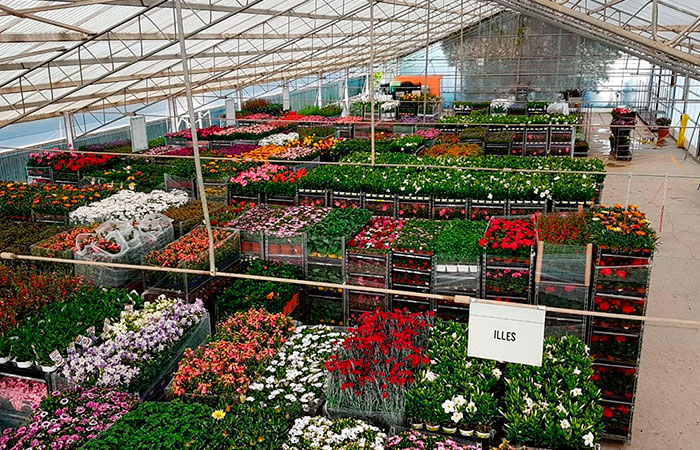

Venta de Plantas y Semillas
En la venta de plantas y semillas del Jardín Botánico se ofrece al público una variedad de especies ornamentales, nativas y endémicas, cultivadas en sus viveros, con el objetivo de promover la conservación y el uso responsable de la biodiversidad vegetal.
Costo
El costo depende de las plantas o semillas a comprar.
Requisitos
Visitar el Jardín Botánico Nacional de manera presencial, ver disponibilidad de planta o semilla que desea y pasar a caja.
Información de Contacto y Horarios
Horario: 8:00 a.m. a 4:00 p.m. en la División de Vivero.
Teléfono: (809) 385 -2611(240)
Correo electrónico: vivero@jbn.gob.do